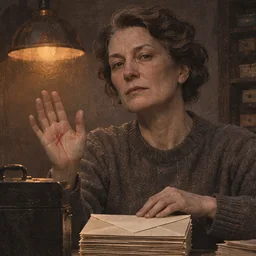
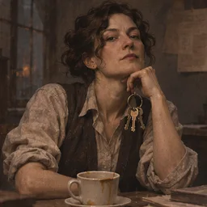
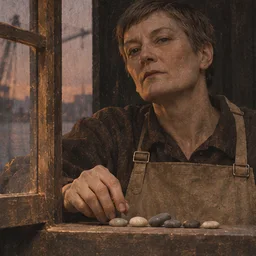

Лидия Рябцева
Серая кофта, красный след от ручки денежного ящика на ладони, тщательно выровненные конверты.
Казначей взаимопомощи, которую несколько лет выбирали за терпение к мелким взносам.
Говорит тихо и аккуратно, выравнивая конверты по краю стола; держится за цифры, защищает переселённых и отходит к окну, когда её обвиняют при всех.
Открыть фигурку для поля
Глеб Сумарин
Хорошо подогнанный плащ, потёртый портфель и вежливое обращение к каждому по имени.
Посредник мелких артелей, умеющий находить тележки и согласовывать чужие заказы.
Говорит мягко и уверенно, называя каждого по имени; предлагает порядок вместо доверия, спорит о праве распоряжаться и не признаётся ради удобства.
Открыть фигурку для поля

Рада Мельник
Закатанные рукава, связка обычных комнатных ключей, чашка, которую она постоянно забывает допить.
Канатчица, помогающая шестерым взрослым товарищам переехать из фабричных комнат.
Говорит прямо и устало, забывая допить чашку; защищает шестерых жильцов, показывает суммы, но не даёт превратить помощь в публичную исповедь.
Открыть фигурку для поля

Тамара Вязова
Брезентовый фартук, коротко остриженные волосы, счётные камешки на подоконнике будки.
Хозяйка небольшого двора ручных тележек, сама работающая в каждой второй перевозке.
Говорит сухо и по-хозяйски, перекладывая счётные камешки; держит чужие деньги отдельно, не отдаёт их по крику и бережёт заработок своего двора.
Открыть фигурку для поля

Иосиф Карцев
Тёмные нарукавники, невысохшее пятно на щеке и стопка бумаги, прижатая гладким камнем.
Печатник, принимающий небольшие объявления без обязательного политического согласия с заказчиком.
Говорит спокойно и по делу, не снимая нарукавников; печатает то, что приносят, но не ставит чужих подписей и ценит своё время не меньше чужих денег.
Открыть фигурку для поля

Марфа Теслина
Белая косынка, медные пуговицы и привычка сначала придвинуть человеку стул.
Распорядительница столовой и добровольная свидетельница утреннего пересчёта кассы.
Говорит неторопливо и тепло, сначала придвигая человеку стул; о чужой нужде говорит шёпотом, отвечает за своё молчание и не отдаёт имён жильцов.
Открыть фигурку для поля
Захар Ремез
Чистые перчатки поверх испачканных манжет, тяжёлая лампа и тихая привычка пересчитывать заказы.
Мастер бытовых замков, который выдаёт работу в бумажных пакетах с подписью получателя.
Говорит тихо и виновато, пересчитывая заказы; показывает пакет и подпись, не объясняет вскрытия и стыдится, что поверил словам без казначея.
Открыть фигурку для поля

Вера Зорина
Потёртая сумка для камеры, длинные шарфы вместо ремней и картонная папка под плащом.
Фотограф, снимающая повседневный труд для витрин местных мастерских.
Говорит быстро и открыто, кутаясь в длинные шарфы; снимает руки и работу, а не лица, и бережёт обещание прохожим больше чужой разгадки.
Открыть фигурку для поля